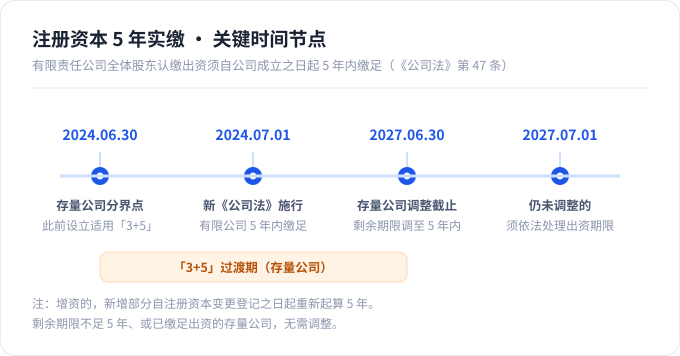
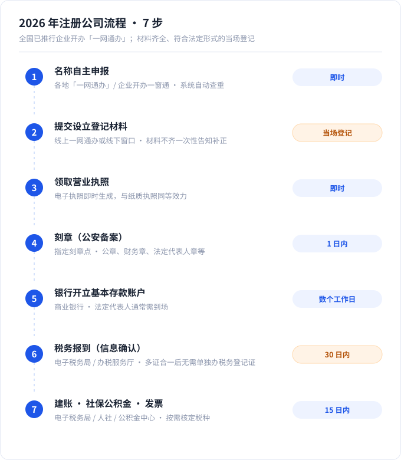

2026 年在中国大陆走一遍注册公司流程，标准是“核名 → 提交设立登记 → 领取营业执照 → 刻章 → 银行开户 → 税务报到 → 社保与发票”7 步：材料齐全且符合法定形式的，登记机关当场登记；而有限责任公司全体股东认缴的出资，必须自公司成立之日起 5 年内缴足（《公司法》第 47 条）。这两句话，几乎决定了你这次注册是省钱省心，还是半年后被迫减资。
如果你最近在看“注册公司流程”，大概率会撞见一堆互相矛盾的说法：有的说认缴期限“你爱写几年写几年”，有的说“最多 30 年”，还有的说注册要“等 3 至 5 个工作日”。这些口径在 2024 年 7 月 1 日新《公司法》施行后，多数已经过期。
更麻烦的是，旧规则没更新，新规则（5 年实缴、“3+5”过渡期、股东出资加速到期）又被讲得含糊。创业者最容易在这三个地方翻车：注册资本写太大缴不上、注册地址不合规被列异、拿照后漏报年报。
这篇指南不堆资料，只做一件事：用官方依据加 2026 年最新口径，把注册公司流程的每一步、每一笔钱、每一个注册完必须做的事讲清楚，并顺手纠正你在别处看到的错误算法。读完你至少能自己判断：该选哪种主体、注册资本写多少、地址怎么选、找不找代办。
- 认缴不等于不用缴：有限责任公司须自成立起 5 年内缴足出资；股份公司是成立前实缴（2024 年 7 月 1 日起施行）。
- 存量公司有硬节点：2024 年 6 月 30 日前设立的公司，若剩余认缴期限偏长，须在 2027 年 6 月 30 日前把期限调整到 5 年内（俗称“3+5”）。
- 设立登记多为当场登记：材料齐全、符合法定形式即办，不是“3 至 5 个工作日”。
- 注册完不是结束：领照起 30 日内税务报到、15 日内建账与账户报告，每年 1 月至 6 月报工商年报，漏报会被列入经营异常名录。
- 印花税别算错：计税依据是实收资本（股本）加资本公积，不是认缴的注册资本；具体税率以现行《印花税法》为准。
一、先搞懂规则：2026 年注册公司流程用哪套“注册资本”新规？
在走注册公司流程之前，你得先明白一件事：注册资本的游戏规则，2024 年换了一副。新修订的《中华人民共和国公司法》2023 年 12 月 29 日通过、2024 年 7 月 1 日施行；配套的《国务院关于实施〈公司法〉注册资本登记管理制度的规定》（国务院令第 784 号）同日施行，2025 年 2 月 10 日又落地了《公司登记管理实施办法》进一步细化。这三份文件叠在一起，就是 2026 年的游戏规则。
有限责任公司“5 年缴足”到底怎么算
关键就一条：全体股东认缴的出资额，须自公司成立之日起 5 年内缴足（《公司法》第 47 条）。如果是增资，新增那部分从注册资本变更登记之日起算 5 年。
注意，这不是要你注册当天就掏钱，也不是写个“50 年”慢慢来。你可以在 5 年内分期缴，但 5 年是上限，超了不行。而股份有限公司更严：发起人应当在公司成立前按认购股份全额缴纳股款（第 98 条），本质是实缴制。

注册资本该填多少、写大了怎么办，可以看注册资本实缴要点的专门拆解。
2024 年 6 月 30 日前注册的公司，2027 年 6 月 30 日是关键节点
已经开过公司的人，重点看这里。按国务院令第 784 号的规定，2024 年 6 月 30 日前登记设立的有限责任公司，如果剩余认缴出资期限自 2027 年 7 月 1 日起仍超过 5 年，就应当在 2027 年 6 月 30 日前，把剩余期限调整到 5 年以内并写进章程，股东按调整后的期限缴足；股份有限公司的发起人同样要在 2027 年 6 月 30 日前全额缴款。这就是常被引用的“3+5”过渡安排。
至于“剩余期限本来就不足 5 年、或已经缴足”的公司，《公司登记管理实施办法》明确无需调整。
老公司别心存侥幸。2027 年 6 月 30 日是分水岭，该改章程、该调期限的，最好提前动手——2027 年 6 月 30 日之前把章程改了，比事后补救便宜得多。
股东出资“加速到期”：为什么注册资本不能乱写
这是竞品几乎不提、却最该让创业者知道的一条。新《公司法》第 54 条规定：公司不能清偿到期债务时，公司或者已到期债权的债权人，有权要求已认缴出资但未届出资期限的股东提前缴纳出资。翻译成人话——你以为“5 年后再缴”，但公司一旦还不上钱，债权人可以让你立刻把钱补上。
所以注册资本不是越大越有面子。它是你承担的出资义务上限，也是一个可能被提前引爆的债务敞口。
说句实在的，绝大多数新手在这一步都会把注册资本写大，因为它不要钱、还显得体面。但它恰恰是后面所有麻烦的源头。
想做贸易、做服务、要签合同的，我的建议是别碰个体户，直接上有限责任公司。这类业务的合同履约风险最高，有限责任这道防火墙最有价值。
哪些主体不适用 5 年实缴
别被标题吓到：5 年实缴只约束有限责任公司和股份有限公司。个体工商户、个人独资企业、合伙企业、农民专业合作社都不适用这套出资期限规则。这也是为什么很多小本生意人干脆选个体户——但个体户有它的另一面，下一节细说。
二、选对主体：有限责任公司 / 一人公司 / 个体工商户怎么选？
注册公司流程的第一步其实不是填表，而是决定注册哪种主体。选错了，后面改起来很贵。下面这张表，把创业者最常纠结的几种主体摆在一起比。
| 对比维度 | 个体工商户 | 个人独资企业 | 一人有限责任公司 | 有限责任公司（多人） | 股份有限公司 |
|---|---|---|---|---|---|
| 法人资格 | 无 | 无 | 有独立法人资格 | 有 | 有 |
| 责任形式 | 无限责任（家庭财产兜底） | 无限责任 | 有限责任（以认缴出资额为限） | 有限责任 | 有限责任 |
| 名称可否含“公司” | 不可 | 不可 | 必须含“有限责任公司/有限公司” | 同左 | “股份有限公司” |
| 注册资本 | 无最低限额、申报制 | 无最低限额、申报制 | 认缴，5 年内缴足 | 认缴，5 年内缴足 | 成立前实缴 |
| 设立分支/融资 | 弱 | 弱 | 较强 | 较强 | 可上市 |
| 典型适用场景 | 社区小店、夫妻店 | 工作室、设计咨询、个人 IP | 想隔离风险的一人创业者 | 合伙创业、规模化 | 有融资或上市计划 |
想隔离风险，为什么多数人选有限责任公司
一句话：个体工商户和个人独资企业是无限责任，公司是有限责任。个体户欠了债，要用个人甚至家庭财产去还；而有限责任公司的股东，原则上只在认缴出资额范围内担责。对做贸易、做服务、有合同履约风险的创业者，这道“防火墙”价值很高。
但要提醒：有限责任不是自动生效。一人公司尤其要注意——如果股东无法证明公司财产独立于个人财产（比如公私账户混用、拿公司账户付家庭开销），法院可能判股东对公司债务承担连带责任。合规记账、公私分账，不是形式主义。
个体工商户适合谁
个体户适合业务简单、规模小、不需要融资、不开分公司的小本经营。优势是设立简单、多数地区无需强制建账，且个体工商户年应纳税所得额不超过 200 万元的部分，可减半征收个人所得税（现行政策延续至 2027 年 12 月 31 日，以最新财税公告为准）。
代价是无限责任，且很难拿投资、开分店、签大合同。如果业务在长大，早晚要面对“个转企”。设立细节可看个体工商户注册频道说明。
一人公司新变化：一个人可开多家、可设一人股份公司
网上大量旧文还在写“一个自然人只能设立一家一人公司”——这是旧规，已经取消。新《公司法》删除了原“一人有限责任公司”专节：一个自然人可以设立多家“只有一个股东的公司”，该公司还能再投资设立同类公司；同时允许设立一人股份有限公司（发起人 1 至 200 人）。
三、注册公司流程：7 步走 + 每一步要多久
现在进入正题。下面是 2026 年注册一家公司的标准注册公司流程 7 步，每一步的办理渠道和时限都标清楚了。

| 步骤 | 环节 | 办理渠道 | 法定/常见时限 |
|---|---|---|---|
| ① | 名称自主申报 | 各地“一网通办 / 企业开办一窗通” | 即时（系统自动查重） |
| ② | 提交设立登记材料 | 线上“一网通办”或线下窗口 | 材料齐全、符合法定形式的 当场登记；不齐一次性告知补正 |
| ③ | 领取营业执照 | 电子执照或窗口领取 | 与登记同步（电子执照即时） |
| ④ | 刻章（公安备案） | 指定刻章点 | 即时至 1 日 |
| ⑤ | 银行开立基本存款账户 | 商业银行 | 预约后数个工作日（各行不同） |
| ⑥ | 税务报到（信息确认） | 电子税务局 / 办税服务厅 | 自领取营业执照之日起 30 日内 |
| ⑦ | 建账 / 社保公积金 / 发票 | 电子税务局、人社、公积金中心 | 建账：领照或发生纳税义务起 15 日内 |
为方便阅读与机器抓取，同样的 7 步用纯文本再写一遍：
- 名称自主申报（线上即时查重）
- 提交设立登记材料（材料齐全、符合法定形式的当场登记）
- 领取营业执照（电子执照与纸质同等效力）
- 刻章并做公安备案
- 银行开立基本存款账户
- 税务报到与建账（领照起 30 日内报到，15 日内建账）
- 办理社保、公积金并按需申领发票
注册公司需要满足哪些条件
在准备材料之前，先确认这几项硬条件：有符合规范的名称、有全体股东与法定代表人（及监事）、有符合法定形式的公司章程、有真实合法的住所并依法申报出资。如果经营范围涉及前置许可（如食品、劳务派遣等），要先取得相应许可文件。核名规则可参考企业名称自主申报解读。
第 1 步 名称自主申报：怎么起名、怎么少被驳回
公司名称一般由“行政区划 + 字号 + 行业 + 组织形式”四段组成（如“深圳市 + 星辰 + 科技 + 有限公司”）。现在多数城市支持线上自主申报、系统自动查重，即时出结果。想少被驳回，避开同行业重名、与知名商标近似、含“国家级/最高级”等禁用词。
第 2 步 准备材料清单
注册公司通常需要以下材料：
- 全体股东、法定代表人、监事的身份证明；
- 公司章程（可线上套用模板，约定出资额、出资期限、议事规则）；
- 住所（经营场所）使用证明：自有房产提供权属证明，租赁提供权属证明加租赁协议；
- 名称自主申报结果；
- 《公司登记（备案）申请书》等登记文书。
第 3 步 提交设立登记：为什么是“当场登记”而不是“3 至 5 天”
这里纠正一个最普遍的错误：很多文章写“设立登记要 3 至 5 个工作日”。准确说法是——材料齐全、符合法定形式的，登记机关当场登记（《市场主体登记管理条例》）。实务中各地线上办理普遍在 1 个工作日内出具电子营业执照。
第 4 步 刻章
拿到执照后到指定刻章点刻制公章、财务章、法定代表人章等，多数地区即时至 1 日完成，并做公安备案。
第 5 步 银行开立基本存款账户
基本户用于公司日常收付、缴税、发工资。需预约，法定代表人通常要到场，各银行耗时不同，多为预约后数个工作日。材料清单见银行开户频道。
第 6 步 税务报到与建账
“多证合一、一照一码”之后，不需要再单独办一张“税务登记证”——这是第二个高频错误。正确做法是：在领取营业执照之日起 30 日内完成税务信息确认（即税务报到）（《税收征管法》第 15 条），并在 15 日内建立账簿。具体流程见税务报到与发票申领。
第 7 步 社保、公积金与发票
有雇员时办理社保、公积金开户，员工依法参保；根据业务需要申领发票、核定税种。
四、注册公司费用由哪些部分构成（官费 + 弹性费）
注册公司需要多少钱是决策阶段的高频问题，也是最容易被套路的地方。这里我们把费用拆成两类看：一类是官方硬性成本，一类是弹性成本。
| 费用类型 | 项目 | 说明 |
|---|---|---|
| 官费/硬性成本 | 工商登记费 | 已取消，设立登记不收费 |
| 刻章 | 各地不同，部分城市对首套章免费或补贴 | |
| 银行开户 | 多数银行免开户费或收少量工本费，看银行 | |
| 弹性成本 | 注册地址 | 自有/租赁/集群注册，差异最大 |
| 代理记账 | 无专职会计时通常需要，价格随规模变化 | |
| 资质/许可 | 特定行业才涉及（如食品、劳务派遣等） |
弹性费怎么省
- 地址：有实际办公场地最省心；没有的话用合规的集群注册或商务秘书托管地址，比租一个“只为注册”的办公室划算得多。
- 代理记账：没有专职会计时，把记账报税交给合规代账机构，通常比自己养一个会计便宜，也更能避免漏报。价格与服务内容可看代理记账与代账机构选择。
印花税到底按什么算
这一条，很多人被网上文章带错了。网上大量文章写“印花税 = 注册资本 × 0.5‰”，计税依据是错的。“营业账簿”印花税的计税依据是实收资本（股本）加资本公积的合计，而不是你认缴的注册资本。也就是说，没实际缴到公司账上的认缴款，不构成这个税目的计税基础。至于具体税率与减免，请以现行《印花税法》及最新财税公告为准——这里不写死数字，是因为政策会调整，照抄旧数字反而害你。
自己办还是找代办
| 维度 | 自己办 | 找代办 |
|---|---|---|
| 时间成本 | 要自己研究材料、跑流程 | 省时间，材料把关更稳 |
| 风险 | 材料反复被退回、地址或章程填错 | 合规机构能提前避坑 |
| 费用 | 只有硬性成本 | 多一笔服务费 |
| 适合谁 | 时间充裕、业务简单的创业者 | 忙、跨地经营、想一步到位的创业者 |
“0 元注册”这类说法要看清适用条件，别被绝对化承诺带偏；真正决定长期成本的是地址是否合规、账有没有按期做。
主体、地址这两件事，选错比贵更麻烦。不确定的话，可以把你的业务模式发邮件给我们，我们先给你排一版方案：免费咨询注册方案。
五、注册地址：自有 / 租赁 / 集群注册 /“虚拟地址”的合规边界
注册地址是注册落地的第一大痛点，也是竞品最含糊、最容易误导人的一节。先把底线说清楚：住所（经营场所）必须真实、合法，申报信息要与实际一致，并提交合法使用证明。
哪些地址可以用来注册
- 自有房产：提供不动产权属证明；
- 租赁场地：权属证明加租赁协议；
- 集群注册或商务秘书托管地址：以一家合规托管机构（由有资质的商务秘书公司提供注册地址与代收信函）的地址作为住所登记。
此外，部分园区对入驻企业有财政奖励或补贴政策，但门槛、行业限制与兑现条件差异很大，需要单独核实，别只看宣传口径。
集群注册是什么
集群注册，就是多家公司共用一个合规托管机构的地址做登记，由托管机构提供住所托管服务。托管机构一般是产业园或孵化器运营单位、会计师事务所或律所等，且需符合当地报备条件。
要注意使用期限：不少地方规定集群注册地址有年限限制（如一般不超过 3 年，续签后总期限也有限），到期未续或解除托管，须在 30 日内办理住所变更登记，否则可能被列入经营异常名录。地址方案对比见注册地址怎么选。
住宅能注册公司吗
这件事没有全国统一答案，因地而异。有的地方明确“住宅以及法律、行政法规禁止用于经营活动的场所，不得作为集群注册地址”，多地还要求住宅改为经营性用房须经有利害关系的业主同意。所以别照搬别的城市的经验，以注册地登记机关的要求为准。你可以在地区导航里找到所在城市的频道查看本地要求。
“虚拟地址”合法吗
“虚拟地址”其实不是一个法律术语。它的实质是集群注册、集中办公区或商务秘书托管地址。它的合法性取决于三件事：当地是否允许、托管机构是否合规报备、地址是否真实可送达。用未备案的假地址注册，风险很实：可能被列入经营异常名录、无法开立银行账户，甚至构成虚假登记。
判断一个地址靠不靠谱，就问一句：工商寄来的信，谁签收、几天能到？答不上来的，别用。
六、注册公司流程走完别漏了这些事（否则会被列异）
拿到营业执照只是开始。真正让创业者吃亏的，往往是注册后这一串“看不见的义务”。
| 必办事项 | 时限 | 关键点 |
|---|---|---|
| 税务报到 / 信息确认 | 领照起 30 日内 | 多证合一后无需单独办税务登记证，做信息确认即可 |
| 建账 | 领照或发生纳税义务起 15 日内 | 无收入也要建账 |
| 银行账户报告 | 开立账户起 15 日内 | 向主管税务机关报告全部账号 |
| 记账报税 | 税种核定后按月/季 | 无业务也须按期零申报（没经营、没收入，也要按期向税务报个到，说明本期为零） |
| 工商年报 | 每年 1 月 1 日至 6 月 30 日 | 报送上一年度报告并向社会公示 |
| 受益所有人信息备案 | 设立登记时（或 30 日内） | 公司/合伙企业须备案，个体户免备案 |
| 社保 / 公积金 | 有雇员时 | 员工依法参保 |
工商年报：逾期后果不是吓唬人
按《企业信息公示暂行条例》第 8 条，企业应当在每年 1 月 1 日至 6 月 30 日通过国家企业信用信息公示系统公示上一年度年报。漏报的法定后果有：
- 未按期公示年报 → 依法列入经营异常名录并向社会公示；
- 可处 1 万元以下罚款（《市场主体登记管理条例实施细则》第 70 条）；
- 连续 2 年未报、被列异且拒不改正、经营场所失联的 → 依法吊销营业执照（条例第 18 条）；
- 公示信息隐瞒真实情况、弄虚作假的 → 处 1 万元至 5 万元罚款，情节严重处 5 万元至 20 万元并列入严重违法失信名单。
每年 6 月 30 日，我都会提醒客户一遍。一年就报一次，漏了要花几倍精力移出异常名录。年报代办可看营业执照频道。
受益所有人信息备案
自 2024 年 11 月 1 日起，《受益所有人信息管理办法》施行：公司、合伙企业、外国公司分支机构须备案受益所有人信息（即最终拥有或控制这家公司的人，穿透股权后看）；个体工商户免于备案。如果你公司的注册资本（出资额）不超过 1000 万元，且股东、合伙人全部为自然人，可以承诺免报。存量主体的备案截止时间以《管理办法》原文为准。这是竞品几乎没写清的蓝海点，但它是合规义务，不是可选项。
七、2024 至 2026 新公司法关键变化速查（创业者必看）
把这两年真正影响你的变化，浓缩成一张速查表。
| 变化 | 内容 | 对你的影响 |
|---|---|---|
| 5 年实缴 + 过渡期 | 有限责任公司自成立起 5 年内缴足；存量公司 2027 年 6 月 30 日前调整 | 注册资本要按实力写，别乱标 |
| 出资加速到期（第 54 条） | 公司不能清偿到期债务，债权人可要求未届期股东提前缴资 | 认缴也是负债，低调更安全 |
| 一人公司放宽 | 一个自然人可设多家一人公司；可设一人股份公司 | 想多开主体不再受限 |
| 公示义务 | 认缴/实缴出资等须通过国家企业信用信息公示系统公示 | 出资信息更透明 |
| 减资新情形 | 新增弥补亏损减资、股东失权减资；按出资或持股比例减少 | 注册资本写大了，有合规路径退出 |
| 简易注销 / 强制注销 | 简易注销公告不少于 20 日；“僵尸企业”可被强制注销 | 不想做了要及时注销，别当僵尸 |
| 催缴与股东失权 | 未按期缴资可催缴、设宽限期，期满可发失权通知 | 出资义务不再是“拖字诀” |
| 登记便利化 | 一网通办、材料精简、住所自主申报承诺制 | 注册更快、门槛更低 |
八、常见问题 FAQ
Q1：2026 年注册公司还需要实缴注册资本吗？
我国实行认缴登记制，注册时无需一次性实缴。但有限责任公司须自成立之日起 5 年内缴足（《公司法》第 47 条），股份有限公司则是成立前实缴。“认缴”只是给了你缴款的时间窗口，不是不用缴。
Q2：注册资本写多少合适？写大了有什么风险？
建议与真实出资能力、业务规模匹配。写大了有三重风险：一是出资义务上限变高；二是触发股东出资加速到期（第 54 条）时压力骤增；三是增资、减资都更麻烦。拿不准时宁可适度，也别为了“显得有实力”虚高。
Q3：有限责任公司、个体工商户、个人独资企业有什么区别？该选哪个？
关键看三点：要不要隔离风险（选公司）、要不要融资或开分店（选公司）、业务是否简单（个体户更省事）。个体户和个人独资企业是无限责任，公司是有限责任。
Q4：一个人可以注册几家公司？
新《公司法》已取消“一个自然人只能设一家一人公司”的旧限制，一个自然人可以设立多家一人公司，也可设立一人股份有限公司。网上仍写旧规的文章，信息已过期。
Q5：没有实际办公地址，能用“虚拟地址”注册吗？合法吗？
“虚拟地址”并非法律术语，实质是集群注册或商务秘书托管地址。合法与否取决于当地是否允许、托管机构是否合规报备、地址是否真实可送达。用未备案的假地址，可能被列异甚至构成虚假登记。
Q6：注册公司流程一共几步？大概要多久？
标准为 7 步：核名、设立登记、领照、刻章、开户、税务报到、社保发票。材料齐全、符合法定形式的当场登记，线上普遍 1 个工作日内出电子执照；税务报到须在领照起 30 日内完成。
Q7：公司名称怎么起？总被驳回怎么办？
名称一般为“行政区划 + 字号 + 行业 + 组织形式”。被驳回多因同行业重名、与知名商标近似或含禁用词。换个不常见字号、核实行业表述，能显著提高通过率。
Q8：注册资本认缴 5 年，是从注册那天开始算吗？
是，自公司成立之日起 5 年；增资部分从注册资本变更登记之日起算 5 年。
Q9：以前注册的公司（2024 年 6 月前）要不要改出资期限？
如果剩余认缴期限自 2027 年 7 月 1 日起仍超过 5 年，应在 2027 年 6 月 30 日前调整到 5 年内；剩余期限不足 5 年或已缴足的，无需调整。
Q10：拿到营业执照后还要办哪些事？多久内办完？
重点四件：30 日内税务报到、15 日内建账、15 日内报告银行账户、每年 1 月至 6 月报年报；有雇员的还要办社保公积金。
Q11：公司没有收入，也要记账报税吗？
要。无业务也须建账并按期零申报，不能因为没收入就什么都不做。
Q12：工商年报什么时候报？漏报会怎样？
每年 1 月 1 日至 6 月 30 日公示上一年度报告。漏报会被列入经营异常名录、可处 1 万元以下罚款；连续两年未报且拒不改正、经营场所失联的，可能被依法吊销营业执照。
Q13：什么是“受益所有人信息备案”？我要不要办？
2024 年 11 月 1 日起施行。公司、合伙企业、外国公司分支机构须备案；个体工商户免于备案；注册资本（出资额）不超过 1000 万元且股东全为自然人的，可承诺免报。
Q14：公司不想做了怎么注销？
可用简易注销：公告期不少于 20 日，公示期满后按规定申请，材料齐全可较快办结；不符合简易条件的走普通注销。别放着不管变成“僵尸企业”，否则可能被强制注销并影响信用。
结语：把“流程”变成“清单”，注册就不难
回头看，2026 年注册公司流程的难点从来不是填表，而是规则变了、很多人还在用旧地图。把这篇的核心浓缩成一张清单，你就能照着走：
- 先定主体：要隔离风险、要融资，选有限责任公司；小本简单生意可考虑个体户。
- 注册资本按实力写：有限责任公司 5 年内缴足，注意 2027 年 6 月 30 日这个存量公司节点，以及加速到期风险。
- 走完 7 步流程：核名 → 设立登记（当场登记）→ 领照 → 刻章 → 开户 → 税务报到（30 日内）→ 社保发票。
- 算清费用：工商登记费已取消；关注地址与代账这两项弹性成本；印花税按实收资本加资本公积算，不是认缴额。
- 地址务必合规：真实、合法、可送达，具体以注册地登记机关要求为准。
- 注册后别漏：30 日报到、15 日建账、年报、受益所有人备案。
照这个顺序走，你大概率不会踩坑。
政策与优惠会变，本文信息截至 2026 年 9 月；涉及具体城市与金额时，请以当地登记机关和税务部门的最新要求为准。
最后一句掏心窝的话：营业执照只是入场券，真正决定你亏不亏钱的，是拿照之后那些没人提醒你做的小事。
与其自己反复试错，不如先把主体、注册资本、注册地址、代账方案一次配齐。把你的业务说给我们听，我们给一版方案。
预约 1 对 1 注册方案 →政策依据与信息来源
- 国务院令第 784 号《国务院关于实施〈中华人民共和国公司法〉注册资本登记管理制度的规定》
- 司法部、市场监管总局关于新《公司法》注册资本登记管理制度的答记者问
- 市场监管总局《新〈公司法〉完善认缴登记制 引导创业者理性投资》（含加速到期）
- 上海市人民政府《新〈公司法〉7 月 1 日施行！》政策问答
- 市场监管总局《公司登记管理实施办法》（2025 年 2 月 10 日施行）
- 《受益所有人信息管理办法》（2024 年 11 月 1 日施行）
- 《税收征管法》第 15 条（30 日内税务登记）
- 国家税务总局山东省税务局《新办纳税人相关业务办理时限》（15 日建账/备案/账户报告）
- 阜阳市人民政府《公司设立登记的办理流程》（当场登记）
- 国家政务服务平台 · 公司设立登记
- 晋江市人民政府企业开办指南（一网通办 + 30 天税务报到）
- 《南宁市经营主体住所（经营场所）“一址多照”登记管理暂行办法》
- 《钦州市经营主体“一址多照”注册登记管理办法》（集群注册条件与期限）
- 《横琴粤澳深度合作区经营主体住所登记管理办法》
- 汕头市南澳县市场监管局年报警示（《企业信息公示暂行条例》第 8、18 条）
- 上饶市人民政府《经营主体年报公示相关政策解读》
- 中国人大网（放宽一人公司限制解读）
- 财政部、税务总局关于增值税小规模纳税人减免政策的公告
- 国家税务总局税收政策链接
- 国家企业信用信息公示系统（工商年报唯一法定入口）